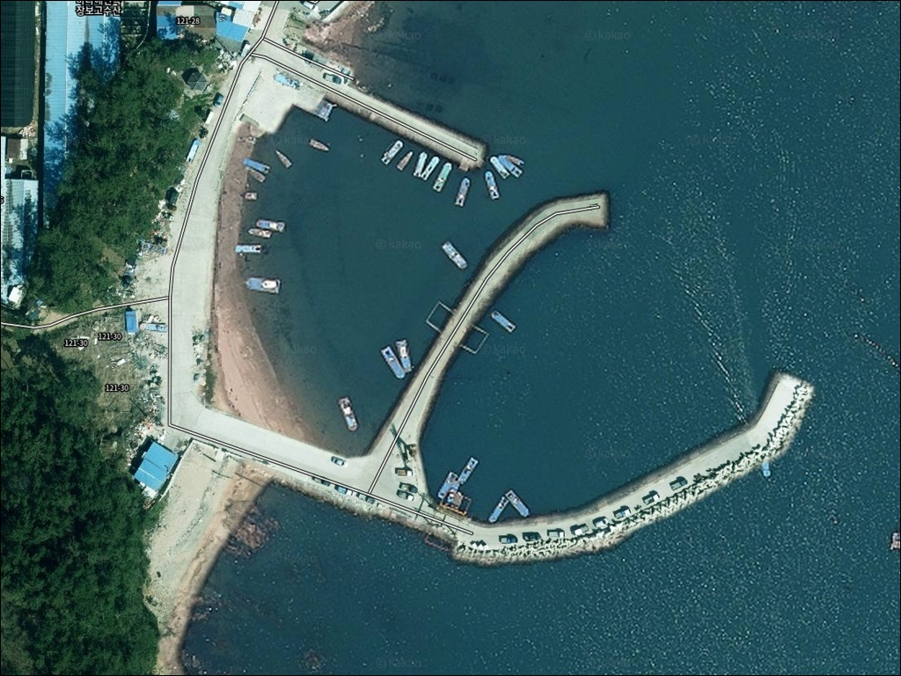
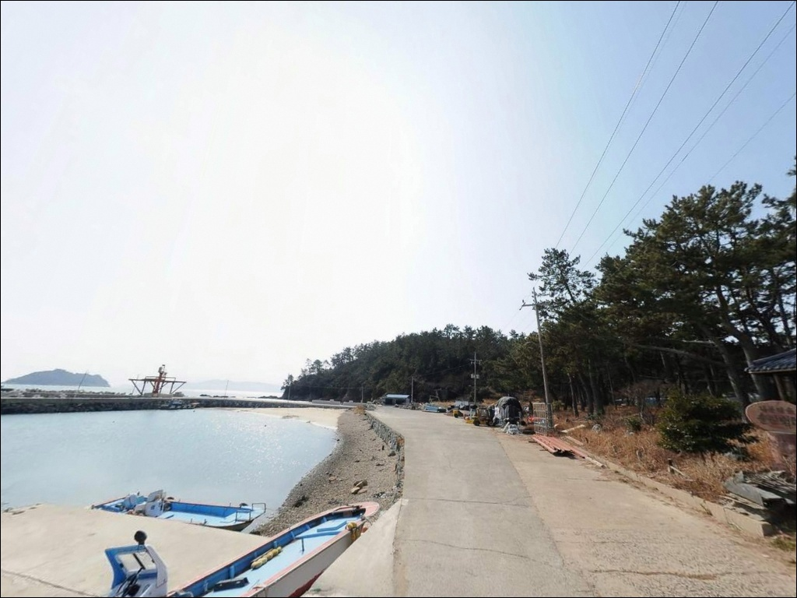
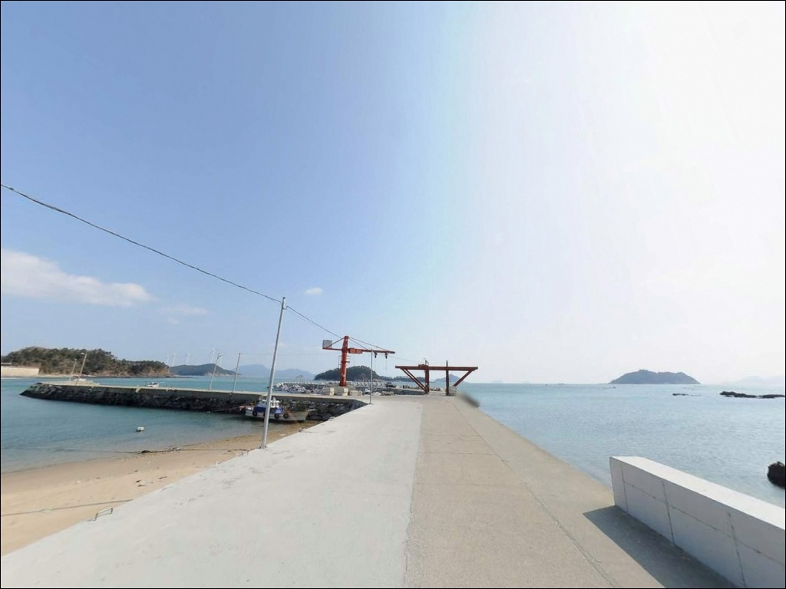
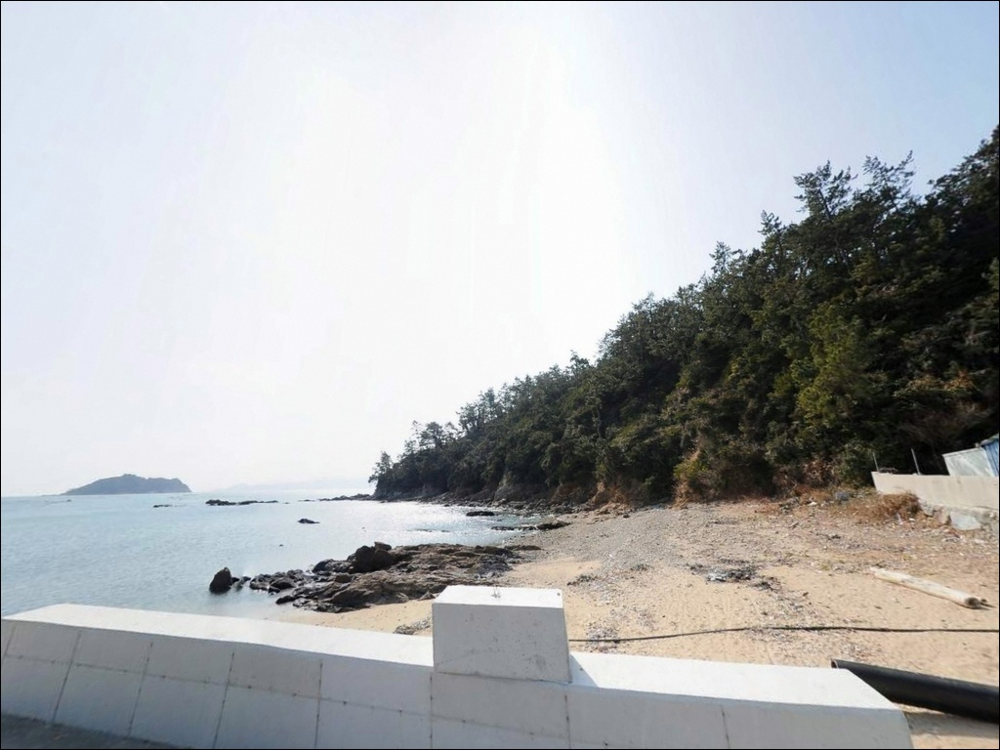
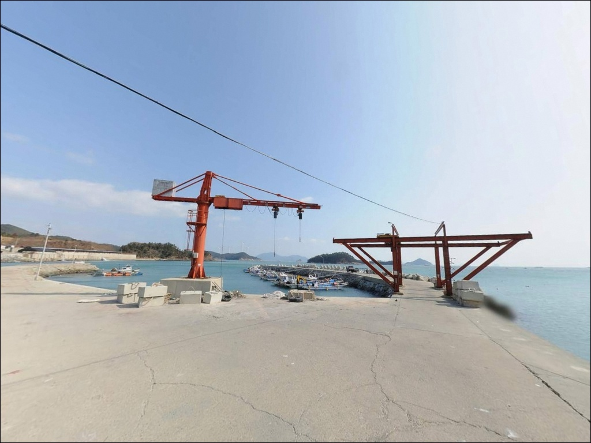
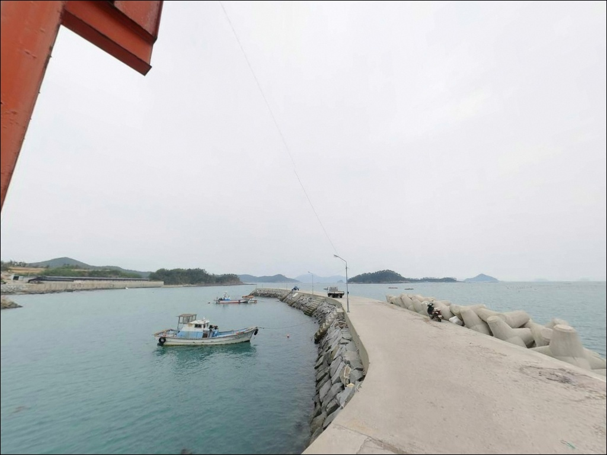
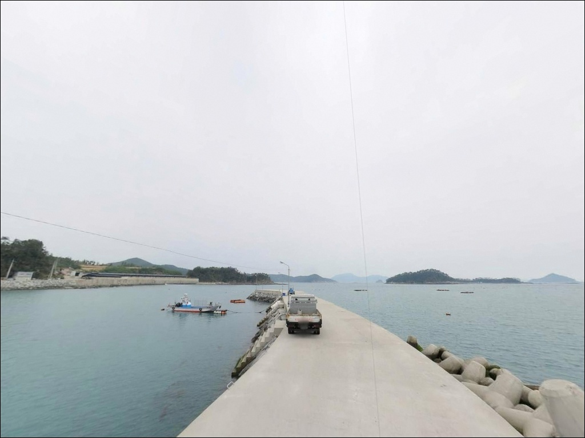
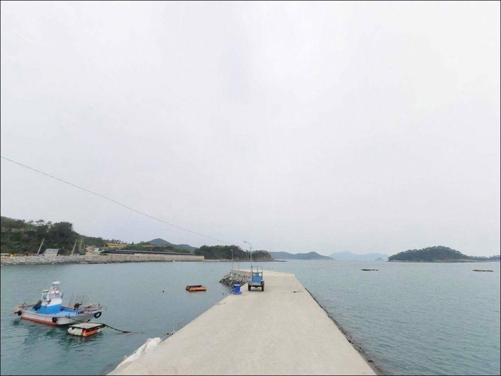
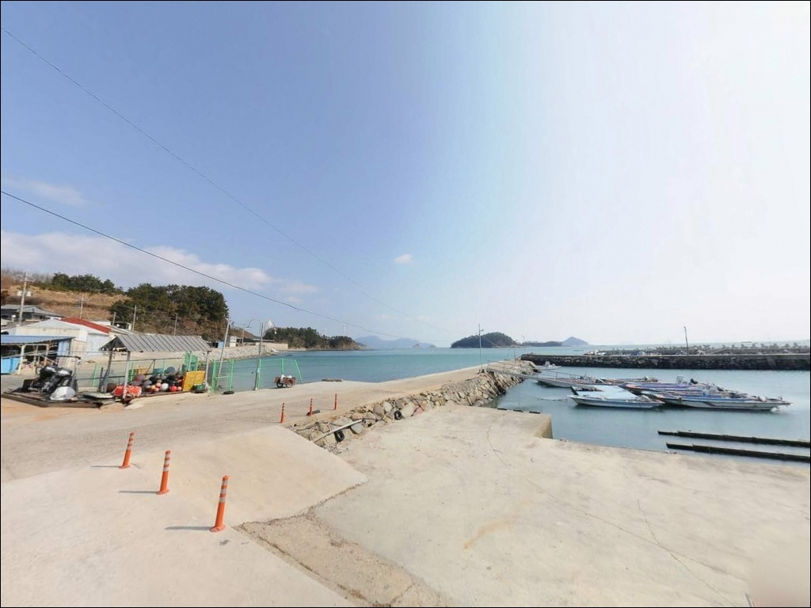

월양리방파제, 신지도 전남 완도군 아는 사람만 조용히 가는 바다 차박 낚시 명소
이 페이지에는 광고(제휴 링크 포함)가 있으며, 광고 링크를 통해 구매하면 운영자가 판매 수익 또는 수수료를 받을 수 있습니다. 포인트 사진: 카카오맵 스카이뷰·로드뷰. 이 페이지의 지도·사진 이미지는 카카오맵의 실제 서비스 이미지와 다를 수 있습니다.


포인트 안내
월양리방파제
전남 완도군 신지면 월양리 1232-10
이 포인트에서 가장 많이 틀리는 판단은
"작은 방파제니까 어디서 던져도 비슷하겠지"라는
생각입니다.
완도수로와 직접 연결된 외항은
조류가 강하게 통과하는 구간으로,
방향과 타이밍을 잘못 잡으면
채비가 밀려 낚시 자체가 어려워지는
상황이 됩니다.
이 글은 월양리방파제의 지형 구조,
진입 환경, 낚시 스타일별 조건에 집중합니다.
조황 단정이나 특정 어종 보장은
이 글의 범위에 포함되지 않습니다.

1. 포인트 위치와 진입 동선
신지대교를 건넌 뒤
신지도 내부 도로를 따라 북서 방향으로
월양리를 향해 이동합니다.
월양리는 신지도에서도 완도읍 방향의
완도수로를 바로 마주하는 위치로,
마을 안길을 통과해야 방파제에 닿는
구조입니다.
마을 안길은 소형 승용차 한 대 기준으로
통행이 가능한 폭입니다.
대형 캠핑카나 루프탑 차량은
마을 입구에서 진입이 제한됩니다.
초행이라면 출발 전 위성지도로
마을 안길 구간을 먼저 확인하고 가는 편이
안전합니다.
방파제 입구 공터에 소형 차량 2~3대
수용 가능한 평탄면이 형성되어 있습니다.
방파제 입구와 선착장 끝부분에서
차량 회차가 가능하며,
대형 차량은 마을 입구에서
미리 회차해야 합니다.

2. 차박 환경과 야간 체류 여건
월양리는 소규모 어촌 마을로
민가 밀집도가 낮고
야간 차량 통행이 거의 없는 편입니다.
건너편 완도읍의 야간 조명이
해상으로 간접 반사되는 환경이지만,
방파제 자체에는 조명이 없어
개인 랜턴이나 집어등이 필수입니다.
외항은 완도수로 방향으로 열려 있어
북풍과 북서풍 계열 기상 시
파도 영향을 직접 받습니다.
남풍이나 남동풍 기상에서는
내항 쪽이 비교적 안정되는 구조입니다.
출발 전 기상 방향을 확인하고
차량 위치를 잡는 것이 기본입니다.
주차 공간이 2~3대 수준으로 넉넉하지 않아
차박을 메인으로 삼을 경우
선점 여부를 출발 전에 염두에 두어야 합니다.
조용히 하룻밤 머무는 낚시 동반 차박 용도로는
마을 분위기가 잔잔하고
외부 간섭이 적은 편입니다.


3. 주변 편의시설과 인프라 현황
월양리방파제 반경 3km 이내에는
편의점이나 낚시점을 기대하기 어렵습니다.
신지면 소재지 방향으로 차량 10분 안팎을
이동해야 기본 인프라에 닿습니다.
식수·얼음·채비·연료는 출발 전에 모두 갖춰야
하는 완전 자급 체제가 현실적인 준비 방식입니다.
신지면 내부 주유소는 신지면 소재지
인근에서 이용 가능합니다.
반경 10km권인 신지대교를 건너
완도읍 시가지까지 이동하면
낚시점과 마트, 편의점,
식당이 집중되어 있습니다.
완도읍이 이 포인트의 실질적인 후방 기지입니다.
신지면월양리방파제 인근에서 확정된
화장실 시설 정보는 없습니다.
응급 상황을 대비해
완도읍 병원 위치를 미리 파악해두고
비상약품은 기본으로 챙기는 편이 좋습니다.

4. 방문 전 반드시 챙겨야 할 준비사항
출발 전 가장 먼저 확인할 것은
물때입니다.
완도수로는 신지도와 완도 사이의 좁은 수로로
조류 흐름이 뚜렷한 해역입니다.
들물과 썰물의 방향이 바뀌는 시점 전후로
외항 끝단에서
채비 컨트롤 조건이 달라지는 구간이라
바다타임에서 신지면 기준 물때를 미리 확인하고
출발 시각을 맞추는 것이 기본입니다.
완도수로 구간은 해협 특성상
기상 변화가 빠를 수 있습니다.
기상청 해상예보를 당일 아침에
다시 한번 확인하는 것이
포인트 낭비를 막는 조건입니다.
방파제 외항 테트라포드 구간은
젖어 있을 때 매우 미끄러우며,
구명조끼 착용은 기본 안전 요건입니다.
마을 어선이 접안하는 소형 방파제 구조상
어선 이동 동선과 어구를 피해
자리를 잡는 것이 기본 매너입니다.
야간 낚시 시에는 헤드랜턴과
예비 조명을 반드시 챙겨야 하며,
밑밥과 쓰레기는 모두 회수합니다.

5. 지형 기반 낚시 여건 분석
월양리방파제의 핵심은
완도수로와 직접 연결된 외항 구조입니다.
신지도와 완도도 사이의 좁은 수로가
조류를 집중시키는 통로 역할을 하며,
방파제 끝단은 그 조류가 꺾이는 지점에
해당합니다.
조류 흐름이 바뀌는 시점 전후로
어군 형성이 뚜렷한 구조입니다.
내항은 수심이 완만하고
수면이 비교적 잔잔하게 유지됩니다.
외항으로 나올수록 수심이 빠르게 깊어지며
테트라포드가 설치된 외항 끝단 구간이
찌낚시와 루어 운용에
지형 조건이 가장 집중되는 자리입니다.
바닥은 모래와 여밭이 섞인 구조로
원투 방식으로도 공략 가능한 구간이
형성됩니다.
신지면 해안 전역에 전복과 광어,
장어 양식장이 밀집해 있어
방파제 주변 수역도 양식장 환경의
영향을 받는 구조입니다.
이런 지형에서 기대할 수 있는 어종은
감성돔, 볼락, 농어, 갑오징어,
붕장어 계열이며,
출조 전 최신 조황은 꼭 검색해 보시기 바랍니다.


6. 낚시 스타일별 공략 조건이 달라지는 구조
외항 조류를 타는 구조상
찌낚시가 이 포인트에 잘 맞는 방식입니다.
전유동 또는 반유동 채비로
외항 조류 라인을 흘려 보내는 방식이
기본이며, 조류가 살아 있는 시간대에
방파제 끝단 외항 쪽을 집중 공략하는 것이
이 지형에 어울립니다.
가을부터 겨울 사이가 찌낚시 시즌으로
활성화되는 경향이 있습니다.
에깅도 이 포인트에서 노려볼 수 있습니다.
완도 신지권 수역은 갑오징어 서식지로
포함되는 해역이며,
외항 테트라포드 주변과 방파제 끝단 구간을
에기로 탐색하는 방식이 유효합니다.
봄부터 가을까지 시즌 폭이 넓은 편이라
연중 접근이 가능한 스타일입니다.
루어낚시는 방파제 끝단과
테트라포드 주변 석축 구간을
지그헤드 웜으로 탐색하는 방식이 기본입니다.
조류가 흐르는 물골 방향으로
캐스팅 각도를 맞추는 것이 핵심이며,
야간에는 볼락 라이트게임도 유효한
지형 조건입니다.
원투낚시는 내항과 외항 중간 수심 구간을
공략할 수 있습니다.
조류가 느려지는 정조 타이밍에
채비를 멀리 보내
바닥층 어종을 노리는 방식이 적합한
구조이며, 도다리나 붕장어 계열을
기대해 볼 수 있는 구간입니다.

7. 대안 포인트와 플랜 B 동선
월양리방파제에 자리가 없거나
조류가 너무 강해 채비 운용이 어려울 때
신지도 내에서 가장 먼저 이동할 수 있는
대안은 송곡항 방파제입니다.
차량 기준 약 15분 거리이며
규모가 더 크고 주차 여건이 안정적인
포인트로, 유사한 어종을 공략할 수 있습니다.
강독선착장도 신지도 내에서
접근성이 좋은 대안 포인트입니다.
주차 공간이 넉넉한 편이며
원투낚시와 루어 방식 모두 운용 가능합니다.
동고리방파제는 수심 6~10m 구간이 확보되어
원투낚시 중심으로 공략하기 적합한 구조입니다.
차박 대안을 찾는다면
신지 명사십리해수욕장 인근 공영주차장이
넓은 공간과 화장실을 갖추고 있습니다.
월양리방파제보다 인프라 여건이
안정적이라 편의를 우선할 때
참고할 수 있는 대안입니다.

완도수로 조류를 이해하면
월양리방파제가 달리 보입니다
찌낚시나 에깅, 루어낚시를 즐기는 낚시인이라면
월양리방파제의 지형 조건은
잘 맞는 구조입니다.
완도수로 조류가 외항 끝단을 통과하는 구조는
조류를 활용하는 낚시 방식에
충분한 환경을 제공하며,
아직 많이 알려지지 않은 포인트라
자리 경쟁이 심하지 않은 편입니다.
반면 대형 차량을 운용하거나
편의시설이 반드시 필요한 분이라면
진입 전 준비가 더 필요한 포인트입니다.
마을 안길 진입로 확인,
물때 계산, 완전 자급 준비,
이 세 가지를 갖추고 간다면
조용히 낚시에 집중할 수 있는 환경이
기다리는 곳입니다.
편의시설 없는 신지도 북서쪽
작은 어촌 방파제에서
완도수로 조류 옆에 자리를 잡고
하룻밤 머무는 차박 동반 출조라면,
신지면월양리방파제는 기억에 남는
선택이 될 수 있습니다.